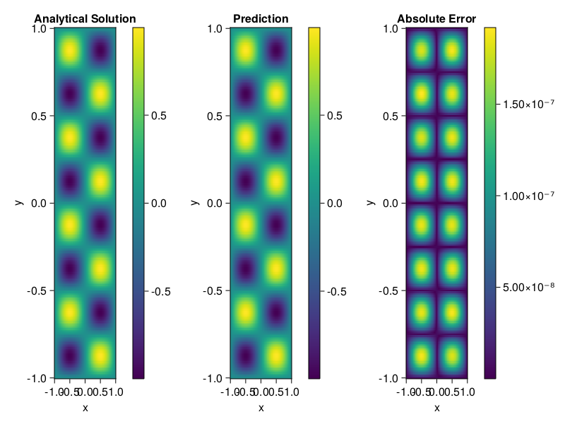

Helmholtz equation
Let us consider the Helmholtz equation in two space dimensions
\[\begin{aligned} &\Delta u(x, y)+k^{2} u(x, y)=q(x, y), \quad(x, y) \in \Omega:=(-1,1)^2 \\ &u(x, y)=0, \quad(x, y) \in \partial \Omega \end{aligned}\]
where
\[q(x, y)=-\left(a_{1} \pi\right)^{2} \sin \left(a_{1} \pi x\right) \sin \left(a_{2} \pi y\right)-\left(a_{2} \pi\right)^{2} \sin \left(a_{1} \pi x\right) \sin \left(a_{2} \pi y\right)+k^{2} \sin \left(a_{1} \pi x\right) \sin \left(a_{2} \pi y\right).\]
The excat solution is $u(x,y)=\sin{a_1\pi x}\sin{a_2\pi y}$. We chose $k=1, a_1 = 1$ and $a_2 = 4$.
using ModelingToolkit, IntervalSets, Sophon, Lux
using Optimization, OptimizationOptimJL
@parameters x,y
@variables u(..)
Dxx = Differential(x)^2
Dyy = Differential(y)^2
a1 = 1
a2 = 4
k = 1
q(x,y) = -(a1*π)^2 * sin(a1*π*x) * sin(a2*π*y) - (a2*π)^2 * sin(a1*π*x) * sin(a2*π*y) + k^2 * sin(a1*π*x) * sin(a2*π*y)
eq = Dxx(u(x,y)) + Dyy(u(x,y)) + k^2 * u(x,y) ~ q(x,y)
domains = [x ∈ Interval(-1,1), y ∈ Interval(-1,1)]
bcs = [u(-1,y) ~ 0, u(1,y) ~ 0, u(x, -1) ~ 0, u(x, 1) ~ 0]
@named helmholtz = PDESystem(eq, bcs, domains, [x,y], [u(x,y)])\[ \begin{align} \frac{\mathrm{d}}{\mathrm{d}y} \frac{\mathrm{d}}{\mathrm{d}y} u\left( x, y \right) + \frac{\mathrm{d}}{\mathrm{d}x} \frac{\mathrm{d}}{\mathrm{d}x} u\left( x, y \right) + u\left( x, y \right) =& - 166.78 \sin\left( 3.1416 x \right) \sin\left( 12.566 y \right) \end{align} \]
Note that the boundary conditions are compatible with periocity, which allows us to apply BACON.
chain = BACON(2, 1, 5, 2; hidden_dims = 32, num_layers=5)
pinn = PINN(chain) # call `gpu` on it if you want to use gpu
sampler = QuasiRandomSampler(300, 100)
strategy = NonAdaptiveTraining()
prob = Sophon.discretize(helmholtz, pinn, sampler, strategy)
@time res = Optimization.solve(prob, BFGS(); maxiters=1000)u: ComponentVector{Float64}(filters = (filter_1 = (bias = [0.23065054754976916; 0.6431594728162899; … ; -0.3603555912206089; 0.5980011992329684;;]), filter_2 = (bias = [0.4313854381860301; -0.1282113678863844; … ; 0.4119447064076551; 0.24017953949674453;;]), filter_3 = (bias = [0.9080194589702631; 0.7359222215654346; … ; -0.22756139630077954; -1.1168138656481505;;]), filter_4 = (bias = [-0.3930580189178888; -0.34771277844979454; … ; 0.020885770846750355; -0.08358388140100291;;]), filter_5 = (bias = [1.113824440983743; 0.06346223759604523; … ; 0.09012410385191881; 0.41891377352980225;;])), linear_layers = (layer_1 = (weight = [-0.3274517411043718 0.38516047191513597 … 0.36840724886457354 0.30959089348222535; 0.416491217457887 0.19232033180917776 … -0.37510341374050005 0.07119026315800953; … ; 0.45262485694792165 0.21969218199341206 … -0.07544686362381527 0.13249872813366165; -0.08927730598173647 -0.08702191372801209 … 0.09270290068885008 0.11731225707442546], bias = [-0.018486224094865965; 0.042991698783400395; … ; -0.022132548228680785; 0.08754114791033403;;]), layer_2 = (weight = [-0.16885491351640544 0.3086190443031646 … 0.3708253983129199 0.39094427042416474; 0.1573416748476594 0.14858206357766732 … 0.025495169387908363 0.3565694588664819; … ; -0.22590317671627436 0.2191583204102194 … -0.014130386364635494 -0.1359734075151235; -0.1612921368643575 0.3162840003479873 … 0.40066491326933656 -0.19326728938580912], bias = [-0.01132847593943911; 0.02137144536946292; … ; -0.00836506007079967; -0.0026526398304923863;;]), layer_3 = (weight = [-0.2614537805945449 0.15896097133093837 … 0.11462565207351451 0.044850248550932226; -0.05283961143831268 -0.09150657796856852 … 0.06594311536170784 0.34666287954214237; … ; -0.027807318343115343 -0.05700947823062752 … -0.2805514897535663 0.27548716642562227; 0.16555255217721979 -0.09410551556430913 … 0.048527732989949696 -0.14019358512111812], bias = [0.001968137597057584; -0.005767973056599906; … ; 0.027100194493895672; -0.00813803572456333;;]), layer_4 = (weight = [0.36934165620948867 0.060183509422715595 … 0.2518248737695343 -0.33476791271214434; -0.2446273074641712 0.15045205281333468 … 0.38094296816065254 0.07750800817811135; … ; -0.3943225963191385 -0.15651316755415798 … -0.1980270708743393 -0.07461481723289552; 0.40620668522461095 -0.38585397207954975 … -0.05375945887116134 0.16426825275767737], bias = [-0.0005232194986204813; 0.0031395277269641326; … ; -0.003812168525731457; 0.0007884980397639704;;])), output_layer = (weight = [0.34456055132851937 0.0910181559237676 … -0.1559927589775684 -0.07326591361406253], bias = [-0.019146648153141387;;]))Let's plot the result.
phi = pinn.phi
xs, ys= [infimum(d.domain):0.01:supremum(d.domain) for d in domains]
u_analytic(x,y) = sinpi(a1*x)*sinpi(a2*y)
u_real = [u_analytic(x,y) for x in xs, y in ys]
phi_cpu = cpu(phi) # in case you are using GPU
ps_cpu = cpu(res.u)
u_pred = [sum(phi_cpu(([x,y]), ps_cpu)) for x in xs, y in ys]
using CairoMakie
axis = (xlabel="x", ylabel="y", title="Analytical Solution")
fig, ax1, hm1 = heatmap(xs, ys, u_real, axis=axis)
Colorbar(fig[:, end+1], hm1)
ax2, hm2= heatmap(fig[1, end+1], xs, ys, u_pred, axis= merge(axis, (;title = "Prediction")))
Colorbar(fig[:, end+1], hm2)
ax3, hm3 = heatmap(fig[1, end+1], xs, ys, abs.(u_pred-u_real), axis= merge(axis, (;title = "Absolute Error")))
Colorbar(fig[:, end+1], hm3)
fig